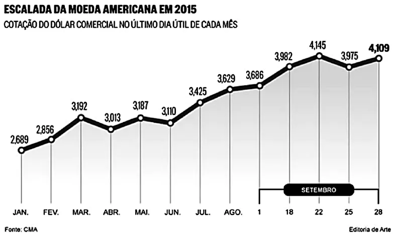
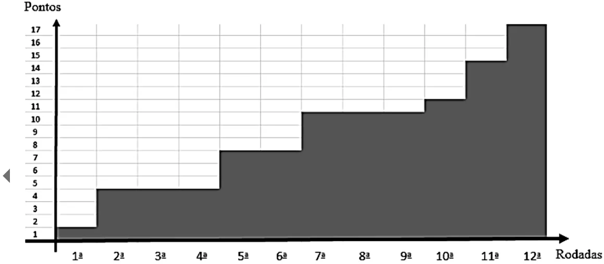

Estatística, gráficos e tabelas
Questão 1:
Assunto: Gráficos | Dificuldade: Fácil

Disponível em: http://oglobo.globo.com/economia/negocios/bc-prometeduas- intervencoes-de-ate-us-3-bi-no-mercado-de-cambio-17625197. Acesso em: 28 nov. 2016.
Com base exclusivamente nos dados apresentados no gráfico quanto à cotação do dólar comercial no último dia útil de cada mês de 2015, assinale a alternativa correta.
Questão 2:
Assunto: Gráficos | Dificuldade: Fácil

O gráfico mostra o número de pontos de uma equipe de futebol nas 12 primeiras rodadas de um campeonato. Sabendo que, nesse campeonato, em caso de vitória a equipe soma três pontos, em caso de empate soma um ponto e em caso de derrota não soma ponto, assinale a alternativa correta.
Questão 3:
Assunto: Gráficos | Dificuldade: Fácil
Para construir um gráfico de setores, representando alguma estatística a respeito de sua turma, um estudante fez a divisão ilustrada na imagem e colocou nele um número referente a um dos setores do gráfico. A respeito dessa construção, assinale a alternativa correta.
Questão 4:
Assunto: Estatística | Dificuldade: Fácil
Até a Copa de 2010, apenas sete jogadores haviam conseguido o feito de marcar 8 ou mais gols em uma mesma edição da Copa do Mundo. O quadro apresenta os anos das edições da Copa nas quais ocorreram esses feitos, quais foram os jogadores que os realizaram e os respectivos números de gols marcados por cada um deles.

Para facilitar a análise sobre a quantidade de gols marcados por esses artilheiros nas referidas copas, foi calculada a mediana da distribuição dos números de gols marcados por eles nas sete copas especificadas no quadro.
A mediana dessa distribuição é igual a
Questão 5:
Assunto: Estatística | Dificuldade: Média
Em uma corrida de regularidade, a equipe campeã é aquela em que o tempo dos participantes mais se aproxima do tempo fornecido pelos organizadores em cada etapa. Um campeonato foi organizado em 5 etapas, e o tempo médio de prova indicado pelos organizadores foi de 45 minutos por prova. No quadro, estão representados os dados estatísticos das 5 equipes mais bem classificadas.
Dados estatísticos das equipes mais bem classificadas (em minutos):

Utilizando os dados estatísticos do quadro, a campeã foi a equipe
Questão 6:
Assunto: Estatística, gráficos e tabelas | Dificuldade: Fácil
A nota final para uma disciplina de uma instituição de ensino superior é a média ponderada das notas A, B e C, cujos pesos são 1, 2 e 3, respectivamente. Paulo obteve A = 3,0 e B = 6,0. Quanto ele deve obter em C para que sua nota final seja 6,0?1
Questão 7:
Assunto: Estatística | Dificuldade: Média
Uma pessoa, ao fazer uma pesquisa com alguns alunos de um curso, coletou as idades dos entrevistados e organizou esses dados em um gráfico.

Qual a moda das idades, em anos, dos entrevistados?
Questão 8:
Assunto: Tabelas| Dificuldade: Extra-Fácil
Uma empresa de exportação de alimentos (soja, café e milho) apresentou o seguinte gráfico de colunas empilhadas
Em que ano a soja foi responsável por mais da metade da arrecadação da exportação
Questão 9:
Assunto: Tabelas | Dificuldade: Fácil
Os resultados de uma pesquisa das cores de cabelo de 1 200 pessoas são mostrados no gráfico abaixo. Quantas dessas pessoas possuem o cabelo loiro?
Questão 10:
Assunto: Tabelas | Dificuldade: Fácil
O Departamento Intersindical de Estatística e Estudos Socioeconômicos (DIEESE) realiza uma pesquisa mensal do valor da Cesta Básica de Alimentos em diversos municípios do Brasil. Observe o gráfico.
Com base nessas informações, Qual é a diferença entre o valor da cesta básica no mês de janeiro dos anos 2015 e 2018?